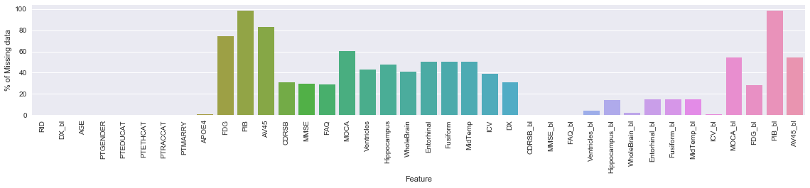
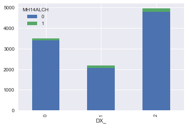
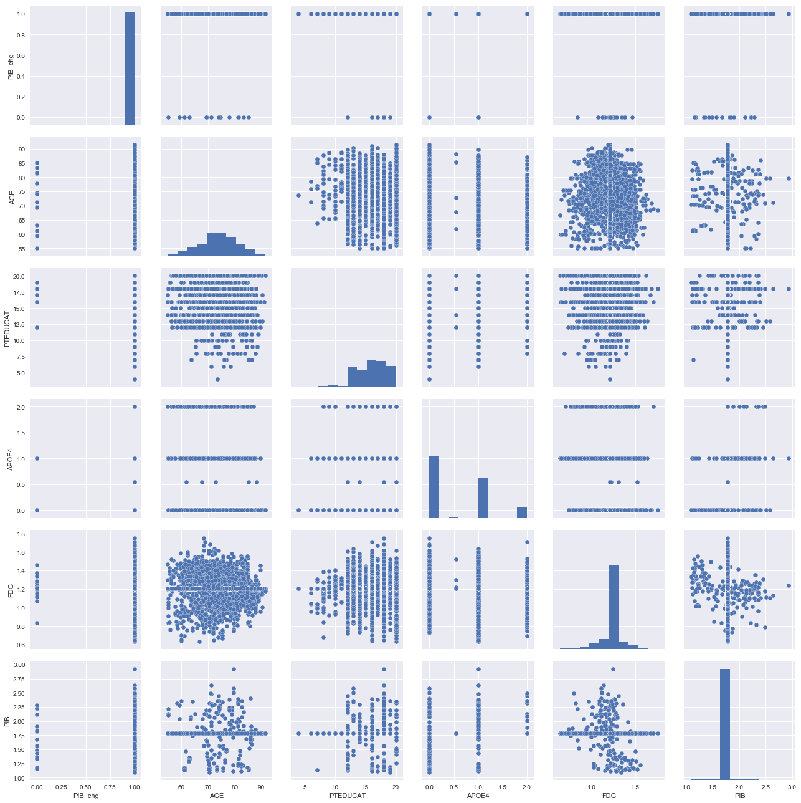

I. Problem Statement and Motivation
In this study, we examine the significance of a subject's medical history in predicting symptoms of dementia or Alzheimer's disease.
II. Introduction
Alzheimer’s is a disease that erodes a patient’s memory, thinking skills and leads to poor judgement, reasoning, planning, language, and inability to perform simple tasks. It is the most common type of dementia affecting more than 5 million Americans. It is ranked as the 6th leading cause of death in the United States
Unfortunately, there is currently no cure for the disease. To find the cure for the disease, the first step is to learn and understand the cause of the disease.
A. Risk Factors
- Age: Studies show that the risk of developing Alzheimer’s increases with age.
- Genetics: The presence of certain genes, e.g.apolipoprotein e4 (APoE4) increase the risk of developing Alzheimer’s.
- Sex: Studies show that women are at a higher risk for developing Alzheimer’s compared to men.
- Past Medical History: Subjects with Obesity, High blood pressure etc. have a higher chance of developing Alzheimer’s
B. Description of Data:
The data for this study was obtained from ADNI (Alzheimer’s Disease Neuroimaging Initiative). The data is maintained at USC’s Laboratory of Neuroimaging at ADNI LONI
The data is grouped into the following categories:
- Assessments
- Biospecimen
- Enrollment
- Genetic
- Imaging
- Study Info
- Subject Characteristics
- Test Data
- _Archive
- _ALL
For this study, we specifically used the following datasets:
- Medical History → Medical History→ Medical History [ADNI1,GO,2]
- Merged Data: Study Info → Data & Databases → Key ADNI tables merged into one table
C. Target Variable
The data target variable for this study is the "DX" column found the on ADNIMERGE.csv dataset
| Target | Abbreviation | Description |
|---|---|---|
| Normal Aging /Cognitively Normal | CN | CN participants are the control subjects in the ADNI study. They show no signs of depression, mild cognitive impairment or dementia |
| Significant Memory Concern | MCI | MC participants score within normal range for cognition (or CDR = 0) but indicate that they have a concern, and exhibit slight forgetfulness. The informant does not equate this as progressive memory impairment nor considers this as consistent forgetfulness. |
| Dementia | Dementia | Dementia |
III: Preprocessing
1: Merge: Merged the data using RID Column to guarantee that the medical record information on MEDHIST.csv correctly mapped to the data on ADNIMERGE.csv file.
2. Evaluate Missing Data: Investigated missing data and observed that the following columns had null values:

These columns represent alcohol consumption, drug abuse and smoking. We considered using data imputation techniques to impute the missing data. But we ultimately decided against it. In our view, it’s would be inaccurate to use other feautures on the dataset to impute the values of smoker/drug user/alcohol consumption without a deep understanding of causal inference. We ultimately decided to drop these columns from the model. We also decided to drop the rows that did not have DX for the same reasons.
3. Encode Output: The target variable is presented in the form of labels i.e. ‘CN’,’MCI’, ‘Dementia’. We used the LabelEncoder() method to encode the target as follows:
#encode the labels
from sklearn import preprocessing
le = preprocessing.LabelEncoder()
data['DX_'] = le.fit_transform(data['DX'])
print(le.inverse_transform([0, 1, 2]))
data = data.drop('DX', axis=1)
| Target | Value |
|---|---|
| CN | 0 |
| Dementia | 1 |
| MCI | 2 |
IV. Exploratory Data Analysis
Observe that the DX data is unbalanced and so we expect the model to be biased towards one class. Closer attention will need to be made on the confusion matrixThe charts below the histogram of DX colored by each feature type
 |
 |
 |
 |
 |
 |
 |
 |
||
 |
 | |||
 |
 |
 |
 |
 |
We examine the corelation between the variables and observed
Pair plot of features

Histogram of Features
Model Selection
We will use LogisticRegression with cross validation as a base model for our system. The table below shows the Classfication Report report for this model. Given the unbalanced nature of the data, the f1-score will be a better metric of measurements.F1-score is a weighted average of the precision and recall, with the best values at 1 and worst score at 0.
| Class | precision | recall | f1-score | support |
|---|---|---|---|---|
| 0 | 0.41 | 0.23 | 0.30 | 1155 |
| 1 | 0.75 | 0.00 | 0.01 | 734 |
| 2 | 0.47 | 0.82 | 0.60 | 1654 |
| avg / total | 0.51 | 0.46 | 0.38 | 3543 |
As expected the base model does relatively well in predicting class 2 because of the imbalance.
Predictions
We evaluated the following models
- Linear DiscriminantAnalysis: LDA presented very low results and predictive ability
- Quadratic Discriminant Analysis: Perfomed better that LDA with increase f1-score on classs 1
- K Neighbors Classifier: We observed that as K increased aove K=5, both the accuracy and F1-Score began to decrease
- Random Forest Classifier: Results are shown below
We did this by creating a pipeline of the models, then performed parameter tuning using crosss-validation, boostrap and Grid-Search. For this data, Random Forrest classifer produced the best results.
Train Score: 0.826856121201 | Test Score: 0.76883996613Because of the classs imbalance, we examine the classication report for additional information
The Classification table below shows the following results
| Class | precision | recall | f1-score | support |
|---|---|---|---|---|
| 0 | 0.82 | 0.85 | 0.83 | 1155 |
| 1 | 0.67 | 0.57 | 0.61 | 734 |
| 2 | 0.77 | 0.80 | 0.79 | 1654 |
| avg / total | 0.77 | 0.77 | 0.77 | 3543 |
For all three classes, the F1-score has significantly improved over the Logistical regression base model.
Summary
In this exercise, we have that showed subjects with certain health risks, have a greater like hood of developing Alzheimer's. However, it's not sufficient to conclude that given a patient who presents a medical history identical to those examined on this study, that this model will accurately predict whether that patient has Alzheimer’. Perhaps other causal features exist that haven't been studied
Factors that warrant additional study
- Longitudinal Data: The data that we used was collected at different time points. A more in-depth analysis of longitudinal effects is therefore necessary.
- Patient Participation: At different timepoints, some patients either did not participate or when they did, incomplete data was collected. This situation leads to significance being given to patient who participate and whose data are complete. The sample data is therefore not a true representative of the entire population.
- Race: The participants in the study overwhelmingly identify as white and therefore do not necessarily represent a true sample of the Alzheimer’s population. Perhaps the assessments, genetics and medical history would yield different results for a different ethnicity. Further, this study is limited to Americans and perhaps a more causality inference study should be examined. Lastly, no objective criterial is provided to identify a person as belonging to one or another.
Credits and References
- About Alzheimers: https://www.nia.nih.gov/health/alzheimers
- Target Variable Description: http://adni.loni.usc.edu/study-design/background-rationale/
- Longitudinal Data: https://hsc.unm.edu/research/ctsc/Docs/longitudinal.pdf